Durable Pi: what it does, why it is durable, how
This page explains the durable-pi-main codebase for a person who has not read it. It covers what the code does, what "durable" means, how durability is implemented, what Pi and Jev do, and the facts a new user would not know to ask about.
Status. Written 2026-10-12 from a snapshot of disler/durable-pi. The repo pins @earendil-works/pi-durable, pi-ai and chord at version 1.0.3 (apps/dpi-backend/package.json:15-19). pi-durable is labelled "Experimental. The API changes without notice between releases" (ai_docs/durable_pi/readme.md:7).
Source markers. Every claim comes from a file in the repo. Some claims cannot be checked in code. These carry a marker:
- pd-doc The claim comes from the pi-durable docs in
ai_docs/durable_pi/. The pi-durable source code is not in this checkout andnode_modulesis not installed, so the library behavior was not checked against its code. - inferred The claim is a conclusion from reading the code. No test or doc states it.
- unverified The claim is likely but nobody ran it. Most Windows items carry this marker.
- video The claim comes from the video transcript (
../transcript.txt), not from the repo.
File references use the form path:line. Paths are relative to durable-pi-main/.
1. What this repo does
This repo runs Pi coding agents as long-lived services on machines you own, and lets any client connect to them over HTTP. The agent survives a crash, a restart, or a closed browser, and continues from its last saved step.
Think of a normal coding agent as a phone call: if the line drops, the conversation is gone, and you must call back and explain again. A durable agent is more like a shared document with an autosave on every keystroke. Close the window, and the document is still there, at the exact point where you stopped. This repo puts that document on a server, so many windows (a browser, a terminal, a curl script) can open it at the same time.
The repo has five apps (README.md:269-293):
| App | Where it runs | What it does |
|---|---|---|
apps/dpi-backend | Every device, port 4780 | The device server. It owns the agents, their SQLite files and their tools. It exposes the v1 HTTP + SSE API with a bearer token. |
apps/dpi-playground | Your laptop, 127.0.0.1:4781 | The "hub" and the Vue web client. The hub stores every device URL and token, and proxies the browser to the devices. |
apps/dpi-tui | Any terminal | A terminal client with Pi's look and keys. It connects to one device directly. |
apps/dpi-sdk | Inside all of the above | The shared wire contract, HTTP client, SSE reader, state reducers, device registry and the just net deploy scripts. |
apps/proactive-dpi-demo | Your laptop, port 4790 | A self-contained demo. A Jev classifier reads a mock production log stream, detects an incident, starts a durable agent that finds and fixes the bug, then waits for your approval to deploy. |
The central sentence of the README: "The device owns the run. Clients only watch and steer." (README.md:59).
2. The four parts: Pi, pi-durable, this repo, Jev
Four separate things work together. People often mix them up. Keep them apart:
Pi (the agent toolkit)
A family of npm packages from Earendil (earendil-works/pi). pi-ai talks to 15+ model providers. The Pi coding agent is a terminal CLI. This repo uses pi-ai for model access only. It does not run the Pi CLI.
pi-durable (the durable harness)
A library in the same family: @earendil-works/pi-durable. It runs the agent loop (model call, tool calls, model call…) and saves every step to storage before it shows the step. All durability lives here.
This repo (durable-pi)
An application on top of pi-durable, written by IndyDevDan (disler/durable-pi). It adds a device server, an HTTP API, a hub, a web UI, a TUI, deploy scripts, extra tools, "durable jobs", and the proactive demo.
Jev (the classifier)
A separate paid API from TypeSafe (typesafe.ai). It answers small, bounded questions about a JSON object ("is this log row normal, suspicious, or an incident?") in a few hundred milliseconds for about $0.00003 a call (README.md:80). It is not part of Pi.
3. Words you need
Several words have two meanings in this codebase. The table gives each meaning a separate entry.
| Term | Meaning |
|---|---|
| Device | One machine that runs one dpi-backend. Example: your laptop (local), a Mac mini over ssh, an exe.dev cloud VM. |
| Session | One pi-durable Harness with one SQLite file (sessions/<uuid>/agent.sqlite) and one working directory on a device. In pi-durable's own docs the same thing is called a "Session" too. |
| Agent = conversation | One conversation inside a session. The repo says "agent"; pi-durable says "conversation". Conversation id 1 is the root and is named Main. Other agents are forks or subagents. |
| Address | device:session:agent, for example mac-mini:api-refactor:fork (README.md:118). |
| Entry | One immutable record in a conversation's history: pi.user, pi.assistant, pi.system, pi.tool-result, pi.reset, pi.compaction. Entries are never deleted. |
| Head marker | The head field on a reset or compaction entry. The model sees only entries from the newest head onward. Older entries stay in storage. |
| Task (pi-durable) | A durable state machine that saves a checkpoint at every step. Every model call (pi.generation), every tool call (pi.tool) and every compaction (pi.compaction) is a task pd-doc. |
| Durable job (this repo) | A repo-defined workflow with named phases: workspace-snapshot, change-watch, release-check. Each job is implemented as one pi-durable task named demo.job.<id>. The web UI shows jobs on the "Tasks" tab, so "task" there means a job. |
| Submission | One piece of input sent to a conversation. Its status is queued, placed, done or unanswered. |
| requestId | A client-chosen id on a submission. The same id in the same conversation is admitted once, even if the client retries. |
| Document (doc) | A JSON value that pi-durable stores and versions, scoped to a session, a conversation or a task. Examples: pi.inbox (queued input), pi.usage (spend), ops.incidents (demo). |
| App State | This repo's one shared JSON document per device. Every agent in every session on that device can read and change it with the read_state and update_state tools. |
| Replay policy | A per-tool flag: "safe" (the tool may run again after a crash) or "unsafe" (it must not; the agent gets an "interrupted" result). Omitted means unsafe pd-doc. |
| Memo | A small first-writer-wins value saved inside a task. Code uses it to remember a decision, so that a rerun after a crash does not decide again. |
| Extension / hook | A pi-durable plug-in that adds tools, prompt sections, hooks and tasks. A hook runs at a fixed point, for example beforeTool (before each tool call). |
| Fork | A new conversation that sees the parent's entries up to one entry, then continues on its own. |
| Subagent | A conversation owned by a task (usually a tool call). The subagent tool and the release-check job create them. |
| Steer / follow-up / reject | What to do with input when the agent is busy. Steer: insert after the current tool round. Follow-up (default): wait until the run ends. Reject: refuse with HTTP 409. |
| Human near the loop | The video's phrase. The agent works alone, then stops at a durable approval point and waits (minutes or hours) for a person. |
| Proactive agent | An agent started by an event (a log row, a webhook, a schedule), not by a person's prompt. |
| Faux provider | A fake model built into dpi-backend (src/faux.ts). Set DPI_PROVIDER=faux to run without an API key or cost. |
4. Why is it "durable"?
"Durable" means: everything the agent does is written to disk before anyone sees it, so a restart can continue at the exact step where the work stopped.
Why /resume is not enough
The normal Pi CLI already saves a session as a JSONL file and has --resume (ai_docs/pi/sessions.md:13-34). The README explains what resume does not know (README.md:52):
| Question after a crash | Plain Pi /resume | pi-durable |
|---|---|---|
| What did the conversation say? | Yes: the transcript is saved. | Yes: entries are committed. |
| Which tool call was running when the process died? | No. | Yes: each tool call is a task with a checkpoint. |
| Did that tool call already change something? | No. | Partly: the task knows it reached "execute". It cannot know whether the outside effect happened, so it tells the agent "interrupted". |
| What input was queued behind it? | No. In plain Pi, "Abort returns queued messages to the editor" (ai_docs/pi/how-pi-works.md:17), so queued input lives in the client. | Yes: queued input is the pi.inbox document. |
| What did the application believe was true? | No. Pi docs say to keep data outside a session in external storage (ai_docs/pi/extensions.md:235). | Yes: documents (App State, incidents, job runs) are committed in the same transaction as the entries. |
| A half-streamed model reply? | Lost. | Partial output is committed every 100 ms (partialIntervalMs). A crash loses at most that window pd-doc. |
What durability gives you
Once a run survives the death of its own process, it no longer needs the window that started it. That single property produces every feature the video lists (README.md:249-255):
| Feature | Why durability is the cause |
|---|---|
| Long-running agents | Close the laptop, kill the process or restart the machine; the run resumes from its last checkpoint. |
| Multi-client agents | The run lives on the device, so a browser, a TUI and curl are all just viewers of the same committed state. |
| Multiplayer agents | Several people can watch and steer one agent, because every viewer reads the same committed state. |
| Human near the loop | An approval is a durable task. It can wait hours, survive a restart, and still not run twice. |
| Proactive agents | Code can start an agent from an event with no person present, because no client window is needed. |
requestId. It does not guarantee that an outside effect (a payment, a page, a deploy) happens once. If the process dies after the effect but before the result is saved, a "safe" tool runs again and an "unsafe" tool reports "interrupted". Your effect needs its own idempotency key (README.md:332; ai_docs/durable_pi/announcement.md:153-155).5. How pi-durable implements durability
The summary below covers the whole system. Sections 5.1–5.12 describe the library only, from its docs in ai_docs/durable_pi/ (mainly readme.md and the 4,696-line spec.md). The library source is not in this checkout, so treat every statement here as pd-doc. The spec uses the development name "Pico5" (ai_docs/durable_pi/sources.md:8). Size: about 15,000 lines of TypeScript without tests (announcement.md:66-69).
Executive summary: how "durable" works here
The short version. One library, pi-durable, does the durable work. It writes every step of an agent (each model call, each tool call, each piece of queued input, each document change) to a SQLite file in one atomic transaction before any client can see that step. When the process starts again, it reads the file and continues each unfinished step from its last saved checkpoint. A tool that was cut off runs again only if it is marked replay-safe; otherwise the agent gets an "interrupted" result and decides what to do. Everything else in the repo either keeps the process alive, prevents duplicates at the edges, or only watches.
Three rules carry all of it: (1) save, then show; (2) every step is a task with a checkpoint; (3) after a crash, rerun only what is safe to rerun, and report the rest as interrupted.
| Component | Role in durability | How |
|---|---|---|
| pi-durable 1.0.3 | The core. All durable behavior. | Single commit line; tasks with checkpoints; replay policy (safe/unsafe, interrupted); memos; requestId admission; durable inbox, documents, timers; recovery on Harness.open (5.1–5.5) pd-doc. |
SQLite (node:sqlite) | The disk. | One agent.sqlite per session, WAL mode, synchronous = NORMAL: survives a process crash; the newest commit can be lost on power failure (5.6). |
| chord | Support. | Stores document changes as base + deltas. Its BACKGROUND_CONTEXT makes sure a closed HTTP request never cancels durable work (apps/dpi-backend/src/store.ts:39). |
| pi-ai | None of its own. | It only sends model requests. After a crash, pi-durable resends the same saved messages through it, with the pinned model and settings. |
| Pi CLI, pi-agent-core | None. | Not used. Plain Pi's /resume restores a transcript only (4). |
| dpi-backend (this repo) | Host and edge guards. |
PID lock files so one process owns each database (the library has no cross-process lock);
opens every session at boot, then calls resume();
passes requestId through and adds an Idempotency-Key on 3 create routes;
receipt keys so App State writes and tool reruns apply once;
durable jobs built as pi-durable tasks with phase checkpoints (6.2–6.6). |
| systemd / launchd | Restart. | Starts dpi-backend again after a crash or reboot (Restart=always, KeepAlive). Without it, nothing resumes until someone runs just backend run. macOS needs auto-login for unattended reboots. |
| Clients (web, TUI, curl) and dpi-sdk | None for state; they help avoid duplicates. | They hold no agent state. They reconnect and get a fresh snapshot. The web client keeps a pending send's requestId in sessionStorage, and the TUI retries with the same id, so a retried send is admitted once. |
| Hub | None. | It stores only device URLs and tokens. It can stop at any time; the agents continue. |
| Jev | None. It is a decision source, not a storage or recovery part. | Durability protects Jev's answers, not the reverse. The damage-control verdict is saved in a memo, so a restart does not ask Jev twice. In the demo, Jev verdicts are stored in a plain SQLite table (watch.sqlite) outside pi-durable; a failed call is marked error and is never asked again. |
| Proactive demo code | Effect-level duplicate guards. | The incident brief uses requestId: "incident:<id>:brief"; the deploy is a durable task, and the log stream ignores a request whose id was already deployed. This is the "own idempotency" that pi-durable requires for outside effects (9). |
5.1 One commit line, and nothing is shown before it is stored
The core rule (spec.md:45-48): "A Session atomically commits immutable entries, full task records, and Chord-tracked documents. Only committed state is observable."
- One line. Every change to a session goes through one serial queue (the "Session line"). There is no second writer, so there are no write conflicts inside a session (
spec.md:1551-1561). - Atomic. One commit writes entries, task state and documents together, or writes nothing (
spec.md:67-82). - Commit, then publish. A watcher sees a change only after the storage commit succeeds. "All visible progress is durable. There is no volatile publication path."
- No outside effects inside a commit. Code must never wait for a model, the network or a person inside
commit(), because that blocks the whole line (spec.md:4605-4607). - A doubtful storage failure is fatal. If the library cannot tell whether a commit was written, it "poisons" the session. You must reopen it (
spec.md:4676-4677).
5.2 Tasks and checkpoints
A task is "a durable state machine that saves a checkpoint at every step" (readme.md:89). Each step (a "phase") returns a new checkpoint, and pi-durable commits it. On restart, the task continues from the last committed checkpoint.
| Item | Values | Ref |
|---|---|---|
| Built-in tasks | pi.generation (model call), pi.tool (tool call), pi.compaction | spec.md:3261-3267 |
| Task states | pending, running, waiting, completing, terminal | spec.md:1610-1622 |
| Outcomes | completed, failed, aborted, orphaned, faulted | spec.md:1601-1606 |
| Define a custom task | defineTask({name, version, initial, phases, abort, migrate?, hooks?}) | spec.md:1712-1725 |
One answered prompt produces this sequence of entries and tasks (readme.md:98-103):
The "effect sandwich" (spec.md:1853-1864) is the pattern every phase with an outside effect follows:
- Commit an intent checkpoint ("I am about to do X").
- Do the outside effect.
- Commit the outcome checkpoint.
If the process dies between step 1 and step 3, reopening finds the task in its intent phase. "Reopening in an intent phase means the effect may have happened." That is the exact uncertainty that the replay policy in 5.3 resolves.
faulted, "because no durable progress was made" (spec.md:1825-1826). A handler that throws also ends faulted.5.3 Replay policy: safe, unsafe, interrupted
A tool task has two checkpoints: {phase:"call"} and {phase:"execute", arguments, replay} (spec.md:3572-3574).
- call: find the tool, validate arguments, run
beforeToolhooks, validate again, then commit the intent: the final arguments, the replay policy, and slot statusrunning. Then, in the same handler, execute the tool, runafterToolhooks, and commit the result (spec.md:3581-3590). - execute: this phase "is reached only by recovery". It means the process died while the tool ran.
In the execute phase, pi-durable decides (spec.md:3591-3595, 3062-3067):
| Stored policy (at call time) | Current policy (after restart) | Result |
|---|---|---|
safe | safe | Run the tool again with the stored arguments. |
safe | unsafe or tool missing | Do not run. Return an interrupted error result. |
unsafe | anything | Do not run. Return interrupted. A later safe never upgrades an earlier unsafe. |
The interrupted result contains the partial output that was committed before the crash. The model reads it and decides what to do next. The README example: a bash call cut off by a restart comes back as interrupted, "so the agent decides what happens next instead of silently repeating a side effect" (README.md:58).
Other tool error codes: tool_unavailable, invalid_arguments, blocked, interrupted, aborted, tool_error (spec.md:3070-3074).
beforeTool hooks again; it uses the stored arguments. A safety hook therefore does not re-check a replayed call. (2) The rerun builds its environment with the conversation's current working directory, which can differ from the first attempt (spec.md:2917-2925, 4661-4663). (3) "Safe" means at-least-once. A safe tool that charges a card must pass its own idempotency key, for example `payment-${task.id}` (announcement.md:459-464).5.4 Memos: remember a decision across a crash
A hook runs outside the commit line, so "a crash before the consuming commit may rerun" it (spec.md:2545-2546). If a hook asks a person or an API for a decision, a rerun would ask again. The fix is a memo:
api.memo(name)reads;api.memo(name, candidate)writes. The first writer wins. Write and read-back are one commit (spec.md:1866-1869).- A memo lives in the task's checkpoint envelope and is deleted when the task ends.
- Hooks share the task's memo namespace, so prefix the name (this repo uses
"jev-damage-control").
This repo's Jev guard stores its verdict in a memo, so a restart in the middle of a bash call does not ask Jev twice (apps/dpi-backend/src/addons.ts:94, 122-126).
5.5 Recovery when a session reopens
Harness.open does this (spec.md:611-623, 1834-1840):
- Every task that was
runningbecomespending. It keeps its checkpoint and any abort mark. - Every task that was
waitingstays waiting. - Tasks in
completingorwaitingare checked again for finalization. - A task whose definition is missing, too old or fails migration stays blocked with reason
missing_task,task_too_oldormigration_failed. Open never ends it. Install the extension and it unblocks. - No handler runs during open. Work starts only after
resume(), or after a call that asks for progress:submit,compact,abort,Submission.wait,waitForTask,waitForIdle(spec.md:633-642).
A model call that was streaming when the process died is handled like this (spec.md:3488-3497): the committed partial text becomes an aborted pi.assistant entry, then the same committed messages are sent again with the pinned model and settings. Aborted, errored and deferred assistant messages are excluded from later requests (spec.md:261-287).
Close (spec.md:927-945) stops new input, signals every running invocation, and waits for it to stop. It writes no outcomes, so the work resumes on the next open.
5.6 Storage
| Backend | Behavior |
|---|---|
| Memory | Nothing persisted. The reference behavior for tests. |
| SQLite (used by this repo) | openNodeSqliteStorage(file). One database file. "WAL mode with synchronous = NORMAL: commits survive process crashes; the newest may be lost on power or host failure" (readme.md:544). One SQL transaction = one session commit. Only the working set (active transcripts, live tasks, pending submissions) is held in memory (announcement.md:87-92). Table names and schema are not documented: "Schema shape, WAL checkpoint cadence, and synchronous defaults are backend implementation choices" (spec.md:4489-4491). |
| JSONL | main.jsonl plus sidecar files. fsync defaults to false. Recovery removes torn lines (spec.md:4502-4536). Not used here. |
readme.md:547). Two processes on one SQLite file is unsupported. This repo adds its own PID lock files (see 6.2).5.7 Queues and admission
submit({type:"input", content, requestId, whenBusy}).whenBusyis"followUp"(default),"steer"or"reject"."reject"throwsConversationBusyand writes nothing (readme.md:309-326).type:"write"appends a passive entry and never starts generation.- Queued input is stored in the
pi.inboxdocument. Steers are placed after the current tool round (postTools); follow-ups at the end of the run (final) (spec.md:2223-2226). - "
requestIddeduplicates within one conversation before any write" (spec.md:2203-2204). A retry returns the existing submission.harness.submission(id)finds a submission again after a restart. - Do not use the model provider's tool-call id as a
requestId; it is not unique across a session. Derive ids fromapi.taskId(spec.md:2963-2964).
5.8 Documents
defineDoc({kind, version, scope, history, fork, initial, migrate?, checkpointWhen?}).scopeissession,conversationortask.historyislatestorrewindable.forkisasOf,currentorinitial(spec.md:949-1107).- Changes happen only inside
commit((tx) => …)viatx.doc(token, id). Values must be strict JSON and are copied on assignment. - Storage holds a base value plus deltas (Chord
Ops).checkpointWhendecides when a new base is written. - Built-in documents per conversation:
pi.agent(model, tools, settings),pi.provider(a session UUID for the model provider),pi.live(the running state),pi.inbox(queued input),pi.usage(spend) (spec.md:655-670). - Inside the library there is no conflict detection, because the single commit line serializes writes. The
409 conflictyou see in the web UI comes from this repo's App State code (6.6).
5.9 Compaction
Library defaults: {enabled:true, reserveTokens:16384, keepRecentTokens:20000, backgroundTokens:32768} (spec.md:384-394).
- Background above
contextWindow − reserveTokens − backgroundTokens: a separate task writes a summary while the agent keeps working. - Blocking above
contextWindow − reserveTokens: the next model call waits for a summary. - Overflow: if the provider reports a context overflow, compact and retry once. A second overflow fails as
model_error(spec.md:3515-3524). - The summary is a
pi.compactionentry with a head marker. The old entries remain in storage, and this repo'ssearch_historytool can still find them. - Each compaction costs one summarization model call, even when a newer summary replaces it and it ends
stale(spec.md:4565-4567).
This repo changes the thresholds; see 6.7.
5.10 Forks, subagents, workflows, waiting
- Fork: the new conversation sees the parent's entries up to entry E without copying them. It gets a fresh provider session id and an empty inbox. Each document follows its
forkpolicy (spec.md:1499-1547). - Foreground subagent: a tool creates a conversation owned by its own task id. On a replay-safe rerun, the tool first looks for its existing child with
tx.scanConversations({ownerTaskId}), so it does not create a second child (spec.md:2958-2997). - Workflows: a custom task can create child tasks and commit
{status:"waiting", on:[ids], policy:"failFast"|"allSettled"}. While waiting, it runs no code.runtime.sleep(until)is a timer that survives restarts (readme.md:466-487). - Waiting for a person: pi-durable has no built-in approval primitive. A task can wait only on other tasks, not on a document or an outside signal. The documented pattern is a
beforeToolhook that asks a person and stores the answer in a memo (announcement.md:406-428). This repo builds approvals differently, with a child task that polls a document (6.5, 9).
5.11 Extensions and hooks
defineExtension({name, tools, sections, hooks, wraps, tasks}), installed withregistry.install(). Reinstalling the same name replaces it in place. The registry lives in process memory; a conversation stores only extension names (spec.md:2279-2461). An extension must therefore be installed on every start, beforeopen.defineTool({name, description, parameters, replay, execute, …}). Default output limit: 50 KiB or 2,000 lines.- Hooks:
beforeRequest,afterResponse,onYield,afterToolson the generation task;beforeTool(rewrite args or{block}; a throw also blocks) andafterToolon the tool task;beforeCompacton the compaction task (spec.md:2548-2620). - Prompt sections render on every request. A change is stored as a
pi.systementry with only the difference, which keeps the provider's prompt cache valid. Text that changes on every render (a timestamp, for example) adds an entry every time and breaks caching (spec.md:4664-4669). - Because tools and settings are read on every request, the tool set, model and thinking level can change mid-run. The next request uses the new values. This is the mechanism behind the "Read only" switch in the video.
5.12 Streams to clients
watchEvents()emits one batch of events per commit:snapshot,message_update,tool_execution_*,compaction_start/endand more. It is marked experimental (spec.md:4050-4193).- A slow watcher keeps at most 100 pending frames or batches. After that it gets one fresh full snapshot. "Nothing is replayed" on reconnect (
readme.md:294-305). - Streams drop intermediate states by design. They are not an audit log (
spec.md:4630-4634).
6. How this repo uses pi-durable (apps/dpi-backend)
The backend imports Harness, createRegistry and InboxDoc from @earendil-works/pi-durable, CodingTools from /tools, NodeExecutionEnv from /env/node, and openNodeSqliteStorage from /storage/sqlite/node (src/store.ts:44-59). Every durable call uses chord's BACKGROUND_CONTEXT, so a cancelled HTTP request never cancels durable work (store.ts:39).
6.1 Files on disk
Path (default ~/.dpi) | Contents |
|---|---|
backend.env | DPI_TOKEN (bearer token, ≥ 32 characters), model API keys, port, host, start dirs. Mode 600. |
backend/catalog.sqlite | Plain SQLite (not pi-durable), WAL. Tables: sessions, conversation_names, meta (the device uid), requests (idempotency keys, deleted after 24 h, at startup only), session_spawns, session_compaction (store.ts:194-206). |
backend/app-state.sqlite | A separate pi-durable harness that holds only App State (src/shared-state.ts:34-42). |
backend/sessions/<uuid>/agent.sqlite | One pi-durable harness per session: all conversations, entries, tasks, documents. |
backend/archive/ | Archived sessions, moved here by DELETE /v1/sessions/:s. |
*.sqlite.lock | PID lock files, one per database. |
6.2 Startup sequence and locks
- Load config: flags, then env file (
--env-file,DPI_ENV_FILE, or$DPI_HOME/backend.env). Startup fails ifDPI_TOKENis shorter than 32 characters (src/config.ts:30-52). - Lock and open
catalog.sqlite, then lock and open App State. - For every catalog row, lock and
Harness.openitsagent.sqlite, with a registry that installsCodingTools, theplaygroundextension and the two add-ons. A session that fails to open is reported as503 unavailable; the others continue (store.ts:217-223,494-565). - Load the model list with
models.getAvailable("openrouter")(10 s timeout; whether this is a network call is unverified). If that fails, startup fails (store.ts:229-231,282). - Only then call
harness.resume()on every session. Interrupted work restarts at this point (store.ts:227). - Listen on
DPI_HOST:DPI_PORT(default127.0.0.1:4780).
Locks (store.ts:103-127): a lock is a file holding the owner's PID, created with exclusive mode. If the file exists, the code checks whether that PID is alive (process.kill(pid, 0)). A dead PID means the lock is stale and is taken over. The recovery test kills the server with SIGKILL and restarts it; this path takes over the stale locks (tests/recovery.test.ts:8-31).
The agent's shell environment is a whitelist: PATH, HOME, USER, SHELL, TMPDIR, LANG, TERM (store.ts:501-505). DPI_TOKEN and OPENROUTER_API_KEY are not passed to bash. (See 12 for why this does not fully protect them.)
6.3 Sending work
POST /v1/sessions/:s/agents/:a/messages with {content, requestId, whenBusy?, waitMs?} (store.ts:808-816, routes.ts:137-149):
content: 1–100,000 characters.requestId: required, ≤ 128 characters.- The backend calls
conversation.submit({type:"input", content, requestId, whenBusy}). The samerequestIdreturns the same submission id (tests/api.test.ts:55-56). whenBusy:"reject"on a busy agent returns409 busy.waitMs(max 300,000) turns the call into a one-shot request: the server waits for the answer and returns200 {status:"done", answer:{entryId, text}}, or202if time runs out. WithoutwaitMsthe response is202 {status:"queued"}.
curl -s "$URL/v1/sessions/oneshot/agents/main/messages" -H "Authorization: Bearer $TOKEN" \
-H 'content-type: application/json' \
-d '{"content":"How many files are in this directory? Use bash.","requestId":"oneshot-1","waitMs":120000}'
# {"submissionId":10,"status":"done","answer":{"entryId":17,"text":"The directory is empty. ..."}}Example from README.md:201-205.
Other agent operations and their pi-durable calls: interrupt = c.abort(ctx, {background}); withdraw a queued input = h.abortSubmission; compact = c.compact(instructions); reset = c.reset(note) (history kept); fork = c.fork(entryId, {ownership:{kind:"ownerless"}}) (store.ts:755-856).
6.4 The 14 tools
Four tools come from pi-durable's CodingTools: read, write, edit, bash (apps/dpi-backend/API.md:53). Their replay policies are set inside pi-durable, which is not in this checkout unverified. The README states an interrupted bash returns "interrupted", which implies bash is unsafe. The other ten come from the repo's playground extension (src/extensions.ts:486-509):
| Tool | Writes? | Replay | What it does / how a rerun stays correct |
|---|---|---|---|
read, write, edit, bash | read: no; others: yes | set in pi-durable | File and shell access in the session's working directory. Not a sandbox. |
read_state | no | safe | Read App State. |
update_state | yes | safe | One path operation on App State. A receipt key agent:<session>:<taskId> makes a rerun return the first result instead of applying twice. |
list_durable_jobs | no | safe | List job definitions. |
run_durable_job | yes | safe | Start a job. A task-scoped Receipt document makes a rerun find the run it already started. |
check_durable_job | no | safe | Read a job's status. |
search_history | no | safe | Search every stored entry, including entries before a compaction or reset. |
ping_on_call_engineer | yes | default (unsafe) | Simulated page; no outside call. A Pager document allows one page per conversation. |
subagent | yes | safe | Start a child conversation. A rerun finds the existing child by owner task. The child cannot call subagent itself. |
start_session | yes | safe | Create a new session on the same device and send it a first prompt, deduplicated by key. |
handoff | no | default (unsafe) | Start a fresh model context with a handoff note. |
Read-only mode removes the 8 tools in WRITE_TOOLS (bash, write, edit, update_state, run_durable_job, ping_on_call_engineer, subagent, start_session) from the agent's next request, which leaves 6 (store.ts:68-77, 780-784). A test confirms a blocked bash call returns "Tool bash is not available" (tests/store.test.ts:246-250).
The two add-on extensions (the "Extend" tab)
system-prompts: a checklist of prompt files fromapps/dpi-backend/prompts/, defaultsmart_ass_opus_fix.md. Checked prompts become a prompt section. The checklist is a document withfork:"current", so a fork copies it (src/addons.ts:29-36,99-113).jev-damage-control(off by default): abeforeToolhook onbashonly. It sends{command}to Jev, and blocks if theeffectanswer isirreversiblewith confidence ≥ 0.6, or if thedestructive_intentscore is ≥ 0.7 (addons.ts:41-72). The verdict is stored in a memo. If Jev fails, the command runs (fail-open). Details in 8.
6.5 Durable jobs
Jobs are the repo's example of a multi-step workflow that survives restarts (src/jobs.ts:64-120). Each saves its result to App State under /jobs/<id>.
| Job | Phases | Inputs |
|---|---|---|
workspace-snapshot | scan → measure → save → verify | path (default .) |
release-check | plan → gather (a subagent) → approve (waits for a person) → publish → verify | commits 1–20 (default 5) |
change-watch | baseline → watch (repeats) → report | path; checks 2–20 (default 5); interval_seconds 2–60 (default 4) |
How a job runs (jobs.ts:667-737): each job is one pi-durable task demo.job.<id>, with checkpoint {phase, iteration, data, approvalTask?}.
- Before each phase except the first, a durable
runtime.sleepof 900 ms. - An entry commit marks the phase as started. If it finds steps from the same iteration, a crash interrupted it: those steps are discarded,
resumedis incremented, and the note "Resumed from the last checkpoint after a restart" is added. - The handler runs. It returns
{done}(commit the next phase) or{again}(commit the same phase withiteration + 1;change-watchuses this for one checkpoint per check).
Granularity. Resumption is per phase and iteration. A resumed phase runs its handler from the start, so its shell commands run again. Writes stay single because each App State write uses a receipt key job:<session>:<task>:<phase>:<iteration>:<path> (jobs.ts:439, 456-470).
How approval waits (jobs.ts:376-400, 622-665):
- One commit sets
run.approval = "pending", creates a child taskdemo.job-approval, and moves the job to{status:"waiting", on:[approvalTask], policy:"allSettled"}. - The child task reads the run record every 500 ms with a durable sleep. It writes nothing until the value changes.
- A person clicks Approve or Decline:
POST …/demo/jobs/:taskId/approvalflips the value in one commit. A second click returns409 conflict. - The child completes; the job wakes, reads the outcome, and continues or fails ("declined").
The pending approval survives a restart (tests/store.test.ts:86-92).
6.6 App State (shared state)
- One JSON document per device, stored in its own harness (
app-state.sqlite), so every session on the device sees the same value, and a fork always sees the current value. - Each change is one path operation:
create(fails if the key exists),update,delete,increment(numbers only). Paths are JSON Pointers.__proto__,constructorandprototypeare rejected. Limits: depth 24, 100,000 characters total (apps/dpi-sdk/src/app-state.ts). - Each successful change increments a
revision. A full-document save sendsexpectedRevision; a stale value returns409 conflict. - A change with a receipt key is checked against the receipt before the revision, so a replayed tool call succeeds even if the revision moved (
shared-state.ts:62-81).
6.7 Compaction numbers in this repo
The repo replaces the library's thresholds with model-dependent ones, set per session (apps/dpi-sdk/src/api.ts:133-159):
wait = min(250000, contextWindow - 16384) // blocking point
auto = min(200000, wait - 32768) // background point
reserveTokens = contextWindow - wait
backgroundTokens = wait - auto
keepRecentTokens = 2000 // library default is 20000| Model window | Background summary starts | Next request blocks |
|---|---|---|
| 1,000,000 | 200,000 | 250,000 |
| 200,000 | 150,848 | 183,616 |
| 128,000 (faux) | Falls back to the library-style default (reserve 16,384, background 32,768) | (tested at store.test.ts:105) |
The web UI's context bar has two draggable markers for these points. The values apply to every agent in the session.
6.8 API, streams and auth
- Auth:
Authorization: Bearer <token>orX-DPI-Token. Both sides are SHA-256 hashed and compared withtimingSafeEqual(src/auth.ts).GET /healthzneeds no token; everything under/v1does. No rate limiting. - Routes: the full list is in
apps/dpi-backend/API.md. Sessions and agents are addressed by id or by unique case-insensitive name:/v1/sessions/release-notes/agents/main. - Streams (SSE): device (
/v1/events), session, and agent. Every stream sendshello, then a snapshot, then deltas. A: pingcomment every 15 s. A viewer more than 2,000,000 bytes behind is disconnected (src/streams.ts:20-74). - No replay:
Last-Event-IDis ignored. A reconnect gets a fresh snapshot. Closing a stream never stops work (streams.test.ts:92-94). - Two dedupe mechanisms:
requestIdfor messages; anIdempotency-Keyheader for three create routes only (POST /sessions,POST …/agents,POST …/fork).
6.9 Walkthrough: kill the device in the middle of a tool call
This is the scenario just test e2e runs on a real device (README.md:319). Read it as one end-to-end story of the parts above.
- You type "run the test suite and fix failures" in
dpi-tui. The TUI sends it with a freshrequestId. The backend callssubmit; pi-durable commits api.userentry and api.generationtask in one transaction. - The web client, open on the same agent, receives the commit through its SSE stream and shows the message. It never talked to the TUI.
- The model streams a reply. Every 100 ms the partial text is committed to
pi.live. The model asks forbash npm test. Api.tooltask commits its intent (executephase, arguments, replay policy) and starts the process. - You close both clients. Nothing changes on the device: clients only watch.
- The device restarts (power cycle,
just net restart, crash). Thebashprocess dies with it. - systemd or launchd starts
dpi-backendagain. It finds the old lock files, sees the PIDs are dead, takes the locks, opens each session, and callsresume(). - pi-durable finds the tool task in its
executephase.bashis not replay-safe, so it does not runnpm testagain. It commits aninterruptedresult with the partial output that was saved. - The generation task continues. The model reads "interrupted", decides to run the tests again, and continues normally.
- You run
just tui attach mac-mini:api-refactor:main. The TUI gets a fresh snapshot and shows the whole run, including the interrupted call. The e2e result: "9 tool results, 1 interrupted by the restart, each prompt admitted once" (README.md:319).
7. The role of Pi
Pi supplies the model access and the agent design; pi-durable supplies the durable loop. This repo uses the libraries, not the Pi CLI.
Pi is "a minimal, extensible agent harness that you can make your own" (ai_docs/pi/readme.md:19). Its maker is Earendil (earendil-works/pi); the pi-durable announcement is signed "From: Earendil Engineering" and dated 2026-10-01, alongside Pi 1.0 (ai_docs/durable_pi/announcement.md:6-20).
badlogic (ai_docs/pi/readme.md:68-73). Surnames are not in any source used for this page.| Package | Role | Used here? |
|---|---|---|
@earendil-works/pi-ai | One API for 15+ model providers | Yes: OpenRouter provider and model catalog |
@earendil-works/pi-durable | Durable conversation, task and document runtime | Yes: the core of every backend |
@earendil-works/chord | State and replication library (contexts, deltas, documents) | Yes: BACKGROUND_CONTEXT, document deltas |
pi-tui | Terminal UI library | Yes: dpi-tui is built on it |
pi-agent-core | The non-durable Agent class | No. The pi-durable docs do not mention it. pi-durable copied its env and tools from the coding agent's harness instead (pico-v5-handoff.md:64-72) |
pi-coding-agent | The pi CLI | No. (It ships its own experimental durable mode at packages/coding-agent/src/experimental/durable; coding-agent-integration.md:7-9.) |
Design choices inherited from Pi. Pi has no permission popups: tools run with the OS permissions of the process (ai_docs/pi/index.md:43). This repo keeps that. A token to a device is therefore a shell on that device. Pi's extension model (tools, hooks, prompt sections) carries over to pi-durable, which is why the video's custom extensions work in the durable agents.
8. The role of Jev
Jev is a cheap, fast classifier. The repo uses it for small yes/no and multiple-choice decisions, and leaves open-ended work to the agent. The design rule: "Code owns thresholds; Jev owns the judgment" (README.md:77-81).
| Layer | Decides | In the demo |
|---|---|---|
| Code | Thresholds and side effects | 3 incident verdicts with one fingerprint within 120 s open an incident |
| Jev | Bounded judgments, one call per row | normal, suspicious or incident plus an impact score; a few hundred ms; about $0.00003 a row |
| Agent | Open-ended work | Investigate, fix, prove, deploy: about $0.09 per incident with Sonnet 5.5 |
How Jev is called
There are two clients with the same shape: apps/dpi-backend/src/jev.ts and apps/proactive-dpi-demo/apps/proactive-dpi-be/src/jev.ts.
| Item | Value |
|---|---|
Endpoint, if TYPESAFE_API_KEY is set | POST https://api.typesafe.ai/v1/systemone, model jev-latest |
Endpoint, else if OPENROUTER_API_KEY is set | POST https://openrouter.ai/api/alpha/decisions, model ~typesafe/jev-latest (an alpha path) |
| Request | {model, state, questions}, header Authorization: Bearer <key> |
| Question types | choice (pick a label; returns choice, confidence, probabilities); score (demo, ordered criteria); noul (backend client, returns a number) |
| Timeout | 15 s per attempt. The "~300 ms" in the README is typical latency, not a limit. |
| Retries | On HTTP 429, 502, 503, 529: 3 attempts in total (2 retries), backoff 800 ms then 1,600 ms. The demo README says "retried up to 3 times" (apps/proactive-dpi-demo/README.md:46); the code does 2 retries. |
| Validation | Each answer's type must match its question, or the call throws. |
Use 1: judge every log row (proactive demo)
Questions (apps/proactive-dpi-demo/apps/proactive-dpi-be/src/watcher.ts:8-33):
verdict(choice):normal(routine; includes expected client errors such as 404, 401, 402 declined card, 429 on a scraper),suspicious(slow queries, timeouts that recovered),incident("Our code is failing real customers…").impact(score 0–4, "No customer impact" to "Many customers blocked and revenue is being lost"). The impact score is stored and shown, but no threshold uses it.
Jev sees a reduced view of each row: severity, service, revision, METHOD route → status in Nms, the message, the first 3 stack lines, and the jsonPayload fields (watcher.ts:53-66).
Fingerprint = service · METHOD route · kind, where kind is the error type, else HTTP <status>, else a normalized message. The bug rows fingerprint as checkout-api · POST /v1/checkout · TypeError (watcher.ts:38-50).
Trigger: when the current row is incident with probability ≥ 0.6, the code counts incident verdicts with the same fingerprint whose log timestamp is inside the last 120 s. At ≥ 3 it opens an incident. ≥ 8 suspicious verdicts also open one (watcher.ts:162-177).
Use 2: block dangerous shell commands (jev-damage-control)
A beforeTool hook on bash in dpi-backend, off by default. The video shows it blocking rm -rf with "Harness blocked because deletion is irreversible" video. Facts from the code (apps/dpi-backend/src/addons.ts:41-134):
- Blocks if
effect=irreversiblewith confidence ≥ 0.6, ordestructive_intent≥ 0.7. - Memoized with
api.memo("jev-damage-control"), so a restart does not ask again. Memos live in the task's checkpoint envelope, so the scope is one tool call pd-doc. - Fails open: no key, a timeout, or an error means the command runs. Worst case before it runs: 3 × 15 s + 2.4 s backoff ≈ 47 s inferred.
- With the faux provider it uses an offline regex instead of the API.
- It covers
bashtool calls only. Notwriteoredit, not job shell commands, not therelease-checksubagent's bash inferred.
9. The proactive demo, step by step
A mock online store ("Lumen Market") emits Cloud Run-style logs. A bad commit breaks guest checkout. Jev flags the errors, code opens an incident, a durable agent fixes the bug and proves the fix, then waits for you to approve the deploy. "It doesn't wait for you to work. It works for you, then waits." (README.md:69).
Short file names in this section (ops.ts, extensions.ts, watcher.ts, repo.ts) refer to apps/proactive-dpi-demo/apps/proactive-dpi-be/src/. In section 6, short names refer to apps/dpi-backend/src/.
The bug
The mock repo has three commits (mock-repo-template/commits.json). The third, "feat(pricing): apply loyalty tier discounts at checkout", adds this line (mock-repo-template/03-loyalty/src/pricing/loyalty.ts:11):
const rate = TIER_RATES[customer.loyalty!.tier];Guest customers have no loyalty field. The ! (TypeScript non-null assertion) hides the problem from the type checker, so every guest checkout throws a TypeError. The commit's tests cover members only, so the suite passes. scripts/reset.ts:51-52 runs it to show that: "That is how it reached production". The video calls this "a classic bad null check" video.
The parts
| Process | Role | Storage |
|---|---|---|
Log stream (apps/proactive-dpi-logs) | Generates traffic at ~2 rows/s. Runs real code: it git archives a commit of the mock repo and imports its checkout route, so the TypeError is real. | .data/logs.sqlite |
Backend (apps/proactive-dpi-be) | Watcher (Jev), pi-durable harness, incident agents, HTTP + SSE for the UI, voice. | .data/watch.sqlite, .data/agent.sqlite |
Web UI (apps/proactive-dpi-fe) | Vue app on port 4790: chat tabs, incident card, Approve/Decline bar, event stream. | none |
The two processes talk only through a key/value control table in logs.sqlite (deploy_request, deployed, live_revision, …).
Timeline (measured 2026-10-05, 2 runs; apps/proactive-dpi-demo/README.md:25-37)
| Time | Event |
|---|---|
| T+5.0 s | Bad revision checkout-api-00042-vex deploys. The stream sends 3 guest checkouts 200 ms apart. |
| T+5.8–5.9 s | 3 incident verdicts → incident INC-0001 opens. One commit creates the incident record and an ownerless conversation configured with CodingTools, OpsTools and IncidentAgent, in a git worktree on branch incident/inc-0001. |
| ~T+8 s | Investigating: update_incident, log_summary, query_logs. |
| ~T+18 s | Root cause found (git log, git show, read the file in the top stack frame); fixing. |
| ~T+21 s | Ready for review: submit_fix proved the new test fails on main and the whole suite passes on the branch, then committed. |
| T+25.3–30.3 s | deploy called; the voice line plays; the deploy task waits for you. |
| after approval | About 3 s: rollout, then verification on 3 live guest checkouts with 0 errors. |
How the incident agent starts with no person
- The watcher's threshold is met. Code (not the agent) opens the incident in one
harness.commit: incrementseq, create the conversation, configure it, write the incident document (ops.ts:125-180). - Code submits the brief with
requestId: "incident:<id>:brief". If the backend restarts,recover()submits the same brief again; the requestId makes the second submit a no-op (ops.ts:117-123,189-196). - The agent follows the
incident_playbookprompt section: investigate → root cause → fix + regression test →submit_fix→ short review note →deploy(extensions.ts:466-486).
Why the deploy cannot run twice
The deploy tool creates a durable task ops.deploy owned by the tool call, with phases approval → rollout → verify. The approval phase reads the ops.deploys document every 400 ms through a durable sleep. The code comment states the reason: "Durable Pi has no built-in signal" (extensions.ts:243). Five independent mechanisms keep the deploy single:
- A replay of the same tool call finds the existing deploy by
toolTaskId === api.taskIdand returns it (extensions.ts:369-372). - The deploy task's phases are checkpoints. A restart resumes the current phase; it does not start over.
POST /api/deploys/:id/decidechanges the status only if it is stillawaiting_approval(ops.ts:306-316).- The log stream ignores a deploy request whose id equals the last
deployed.id(apps/proactive-dpi-logs/src/main.ts:96). - The "ready" voice flag is set in the same commit as the task, so the announcement does not repeat after a crash.
This is the repo's practical answer to "durable is not exactly-once": the effect (the rollout) carries its own idempotency key (the task id), checked by the receiver.
Guardrails on the incident agent
- A
beforeToolregex onbashblocksgit push,merge,rebase,switch,worktree,reset --hard, branch delete/rename, and checkout of new branches ormain/master. Message: "Blocked by the incident guard… A human reviews and merges." (extensions.ts:460-461,488-500). - API keys are kept out of the agent's shell; test runs get only
PATHandHOME(ops.ts:72-77,repo.ts:40). - Tool calls run one at a time (
toolExecution: "sequential"), chosen for a readable timeline (ops.ts:86-87).
Commands
just proactive install # dependencies
just proactive build # build the UI
just proactive take # reset and start; prints http://localhost:4790; bug deploys at 5 s
just proactive bug # deploy the bad commit now
just proactive stop # end the demoUseful flags (passed through take/start): --bug-at (5, or off), --rate (2 rows/s), --incident-threshold (3), --suspicious-threshold (8), --window (120 s), --model (anthropic/claude-sonnet-5.5), --thinking (high), --tts (host on macOS, browser elsewhere), --host (127.0.0.1), --port (4790). Voice uses ElevenLabs if ELEVENLABS_API_KEY is set; otherwise the line shows as a toast.
10. The network: hub, SDK, TUI, devices
Device kinds (dpi-network.yaml)
Devices are data: the YAML declares each device, and no code or recipe names a machine. The file is gitignored; copy it from dpi-network.example.yaml.
| Kind | How it runs | just net up <id> does |
|---|---|---|
local | just backend run on this machine, or a service if service: is set | Write ~/.dpi/backend.env and register (plus the service if set) |
ssh | launchd LaunchAgent (macOS) or systemd unit (Linux) | Install Node with nvm, rsync code, npm ci, env, service, register, wait online (up to 90 s) |
exe-dev | systemd on an exe.dev VM behind its HTTPS proxy | Create the VM if missing, the ssh steps, then make port 4780 public over HTTPS |
url | Anything already running | Register the URL and token only |
YAML fields: name, kind, port (4780), node (24), code_dir (~/dpi), home_dir (~/.dpi), start_dirs (["~/dpi-work"]), host (127.0.0.1 for local, 0.0.0.0 otherwise), env_keys, env, service, ssh, vm, create, url, and the undocumented token_env (apps/dpi-sdk/src/node/config.ts). Device fields merge over defaults shallowly, except env, which merges key by key. A device-level env_keys therefore replaces the default list.
just net up <id> # every step for the kind, in order; idempotent
just net status # probe every device; exit 2 if any is not online
just net deploy <id> # ssh, exe-dev: rsync code, npm ci, restart; data stays
just net logs <id> # tail the service log
just net restart <id>
just net rotate <id> # new token, then re-register
just net destroy <id> # exe-dev only; asks you to type the VM name
just net probe <id> # /healthz must be 200, tokenless /v1/device must be 401The hub (apps/dpi-playground)
- Binds
127.0.0.1:4781. Stores every device URL and token in~/.dpi/network.sqlite(mode 600, plain text). - The browser never sees a token. It opens one SSE connection to the hub; the hub opens the authenticated streams to devices and multiplexes them (max 20 subscriptions per tab).
- A guard on
/api: an unknown Host header returns 421 (against DNS rebinding); an Origin that does not match Host returns 403; POST/PUT/PATCH must be JSON (415). - A monitor loop per device sets its status:
| Status | Detected by | Fix shown in the UI |
|---|---|---|
online | GET /v1/device succeeds | — |
checking | A probe is in progress | — |
offline | Network error; retry with backoff 1–30 s | just backend run or just net restart <id> |
unauthorized | No token stored, or HTTP 401 | just net register <id> |
mismatch | The device answers with a different uid than the one first seen (a rebuilt VM or wiped data dir) | just net register <id> (re-trusts) |
incompatible | apiVersion is not 1 | just net deploy <id> |
An offline device keeps its last known tree, dimmed.
The web client
Three columns: network tree (device → session → agent), inspector, agent transcript. Inspector tabs: Session (model, thinking, context bar, usage), State (App State), Tasks (durable jobs and the live task tree), Tools (read-only switch, each tool's signature and "replay safe" or "interrupt on crash"), Extend (the two add-ons). The composer has three modes: Follow-up (default), Steer, Reject if busy. Slash commands: /compact, /reset, /tasks, /new, /fork, /name, /model, /thinking, /help. A send's requestId is kept in sessionStorage, so a retry of the same text after a reload is deduplicated by the device.
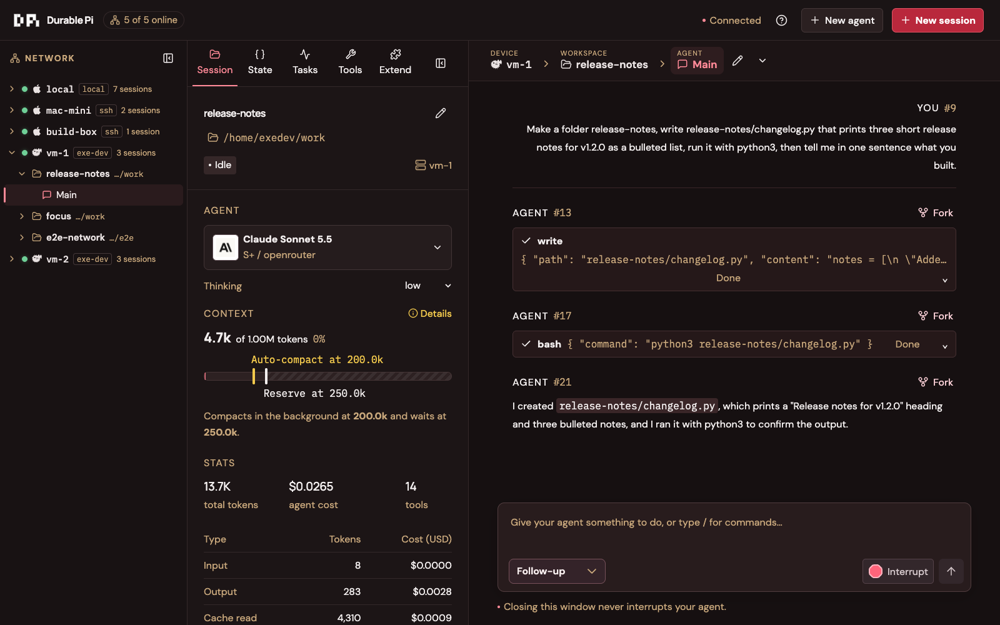
The TUI
just tui attach <device> # pick or create a session
just tui attach <device>:<session>:<agent> # straight to an agent, by name or id
just tui new <device> <name> # create a session and attach| Key | Action |
|---|---|
| Enter | Send. Steer if the agent is busy, else follow-up. (The web default is always follow-up.) |
| Alt+Enter | Queue as follow-up |
| Esc | Interrupt the foreground run |
| Shift+Tab | Cycle thinking level |
| Ctrl+L | Model picker |
| Ctrl+O | Expand tool output and thinking |
| Ctrl+C on empty input | Exit and print the reattach command. The agent keeps running. |
The SDK
apps/dpi-sdk is not published to npm; apps import it by relative path. One reducer (AgentModel) turns stream frames into state, and one function (toTranscript) turns state into transcript items. The web client, the TUI and the backend's /transcript endpoint all use them: "One reducer, two renderers" (README.md:121). DpiClient.follow() reconnects with backoff 1–15 s and stops on unauthorized or not_found.
11. Run it (and the Windows facts)
- The
justfileand everyjust/*/mod.justsetshell := ["zsh", "-cu"]with nowindows-shell.zshis not installed here, so everyjustrecipe fails natively. - Node here is v22.22.0. The README and
/installrequire Node 24. The backend'senginesfield accepts ≥ 22.19. The proactive demo README requires 24.14+. rsyncandlsofare not installed.just/free-port.shexits 0 silently whenlsofis missing, so it does not free the port.
DPI_START_DIRSis split on:(apps/dpi-backend/src/config.ts:40-43), so a path likeC:\worksplits intoCand\work.apps/proactive-dpi-demo/scripts/demo.ts:37spawnsnode_modules/.bin/tsxwithout a shell. On Windows the shim istsx.cmd.voice.ts:49builds a URL withpath.split("/"); Windows paths use\, so browser voice breaks.just proactive stopusespkill,openis macOS-only,afplayis macOS-only.- The registry's mode-600 permission is a POSIX permission; Windows does not enforce it the same way.
~/), not under /mnt/c. node_modules is not portable between Windows and WSL because it holds platform binaries (esbuild, oxlint).Quickstart (macOS, Linux or WSL2)
- Install Node 24 (nvm),
just,zsh,git. Get an OpenRouter API key. - Create the env file and the network file:
cp .env.example .env # set OPENROUTER_API_KEY=sk-or-... cp dpi-network.example.yaml dpi-network.yaml # declares only `local` - Install, configure this machine, build the UI:
just install just net up local # writes ~/.dpi/backend.env with a fresh DPI_TOKEN, registers the device just hub build - Check (free; uses the faux model):
just check - Start the device server, the hub, and a terminal client, each in its own terminal:
just backend run # :4780 just hub start # http://localhost:4781 just tui attach local - Expected: the hub page shows device
localas online. Create a session, typeping, and see the answer in both the browser and the TUI.
DPI_PROVIDER=faux just backend run. The faux model echoes, and responds to triggers such as !ls (runs bash), jobs?, job: workspace-snapshot {} wait, slow: (apps/dpi-backend/src/faux.ts). Cost: $0.The repo also ships Claude Code commands: /install (runs the steps above, never starts a server, never touches a device other than local) and /prime (loads project context) in .claude/commands/.
12. Unknown unknowns
These are facts a new user would not know to ask about. Each item gives the likely assumption, what the code does, and what to do.
Short file names in this section: store.ts, jobs.ts = apps/dpi-backend/src/; watcher.ts, watch-store.ts, ops.ts = apps/proactive-dpi-demo/apps/proactive-dpi-be/src/; deploys.ts = apps/proactive-dpi-demo/apps/proactive-dpi-logs/src/; guard.ts = apps/dpi-playground/apps/dpi-playground-hub/src/; registry.ts = apps/dpi-sdk/src/node/; spec.md, readme.md = ai_docs/durable_pi/.
Durability guarantees
"Durable" does not mean "every effect happens exactly once"
- Assumption
- After a crash, the system makes sure each action happened once.
- Reality
- Only admission of a submission with a
requestIdis exactly-once. A replay-safe tool reruns (at-least-once). An unsafe tool reports "interrupted" and the effect may or may not have happened (README.md:332). - Action
- Give every outside effect its own idempotency key, as the demo deploy does with the task id (9).
A power cut can lose the newest commit
- Assumption
- Anything shown in the UI is on disk forever.
- Reality
- SQLite runs in WAL mode with
synchronous = NORMAL: commits survive a process crash, "the newest may be lost on power or host failure" (ai_docs/durable_pi/readme.md:544) pd-doc. - Action
- Treat the last second before a power loss as uncertain. For hard guarantees on a device, use a UPS or a VM host with durable disks.
A safety hook does not run again on a replayed tool call
- Assumption
- A
beforeToolguard checks every execution. - Reality
- On recovery, a replay-safe tool reruns with the stored arguments and
beforeToolis skipped (spec.md:2917-2925) pd-doc. The guard decided once, at call time. - Action
- Accept this for guards whose decision does not change. Put checks that must run on every execution inside the tool itself.
A hook can run twice; a phase that changes nothing is "faulted"
- Assumption
- Hooks and task phases run once.
- Reality
- Hooks run outside the commit line and can rerun after a crash. A phase that returns its input checkpoint unchanged ends
faulted(spec.md:1825-1826,2545-2546) pd-doc. - Action
- Store hook decisions in a memo. Make every phase return a changed checkpoint.
Queued follow-ups can wait forever after a failed run
- Assumption
- A failed run processes the queue anyway.
- Reality
- After a failed run, queued follow-ups stay in
pi.inbox, and theirwait()does not settle until the next submission or a withdrawal (spec.md:4559-4564) pd-doc. - Action
- After an error, send a new message or withdraw the queued item (the X on the queue strip).
Removing an extension can freeze tasks
- Assumption
- Old tasks from a deleted extension fail and disappear.
- Reality
- A task whose definition is missing at open stays blocked (
missing_task) and still counts as live, so "wait until idle" can hang (spec.md:611-623) pd-doc. - Action
- Keep task definitions (with
migrate) until old sessions have no live tasks of that kind.
A resumed job phase repeats its shell commands
- Assumption
- Jobs resume at the exact step.
- Reality
- Resumption is per phase and iteration. The phase handler runs from the start again; only App State writes are deduplicated by receipt (
jobs.ts:676-694). - Action
- Keep each phase's shell work safe to repeat, as the three example jobs do.
Security
A device token is a shell on that device
- Assumption
- The token only lets you chat with an agent.
- Reality
- Anyone with the token can make an agent run
bashas the device's user.start_dirsonly set where sessions begin; any existing directory is accepted as a working directory (store.ts:398-406;README.md:333). - Action
- Treat tokens like ssh private keys. Run devices as a dedicated low-privilege user, ideally on a machine reserved for agents, as the video does with its M6 Mac mini video.
The agent can read its own API keys from disk
- Assumption
- Keys are hidden because the agent's shell environment does not include them.
- Reality
- The shell env is a whitelist (
store.ts:501-505), but~/.dpi/backend.envholdsDPI_TOKENandOPENROUTER_API_KEYand runs as the same user. Areadorcatof that file works inferred. A prompt injected through a log line or a web page could ask for it. - Action
- Use a key with a spending limit. Do not give agents untrusted input on a device that holds valuable keys.
The hub has no login
- Assumption
- The Host/Origin guard protects the hub.
- Reality
- The guard blocks browsers on other sites. A request with no Origin header (curl, any local program) passes. The hub holds every token and proxies every route, including session deletion (
guard.ts:15-25). Binding the hub to a non-loopback address exposes every device. - Action
- Keep the hub on 127.0.0.1. Treat any local process as able to control your devices.
exe.dev devices are public on the internet; LAN devices send tokens in clear text
- Assumption
- A cloud sandbox is private.
- Reality
just net uprunsshare set-publicfor exe-dev devices; the bearer token is the only gate.sshdevices on the LAN speak plain HTTP (README.md:334). ssh usesStrictHostKeyChecking=accept-new(trust on first use).- Action
- Rotate tokens (
just net rotate <id>) after any doubt. Use a VPN (for example Tailscale) for LAN devices.
Read-only mode only limits the model
- Assumption
- A read-only agent cannot change anything.
- Reality
- It removes 8 tools from the model's list. The REST routes
/demo/jobsand/demo/statestill run jobs (with shell commands) and change App State on that agent (store.ts:1098-1143). - Action
- Use read-only as a safety switch for the model, not as an access control for clients.
The demo's git guard is a regex, and approving a deploy runs agent code
- Assumption
- The incident agent cannot touch
main, and the approved code runs in a separate service. - Reality
- Forms such as
git -C … push,git -c x=y pushandupdate-refdo not match the pattern, andwrite/editare not checked inferred. The log streamimport()s the approved commit into its own process (deploys.ts:31). The demo has no login and binds 127.0.0.1 by default. - Action
- Keep the demo on loopback. Review the diff ("View diff") before you approve.
Jev
The damage-control guard fails open and has gaps
- Assumption
- With
jev-damage-controlon, destructive commands cannot run. - Reality
- No key, an error or a timeout lets the command run. It checks
bashtool calls only. It sends every command's text to a third-party API (README.md:337). It is off by default. - Action
- Treat it as a seat belt, not a sandbox. Use OS-level isolation (a dedicated user, a VM) for real protection.
A Jev outage leaves rows unjudged for good
- Assumption
- When Jev recovers, the backlog is judged.
- Reality
- A row that fails is recorded as
errorand never re-judged. Only rows in flight at a backend restart are re-judged (watcher.ts:155-157). The demo still recovers because the bug keeps producing new failing rows inferred. - Action
- In production, add a retry queue for
errorrows, or a cheap code pre-filter (the video suggests checking 4xx/5xx status first video).
The incident threshold counts low-confidence rows
- Assumption
- All 3 counted verdicts passed the 0.6 probability gate.
- Reality
- The 0.6 gate applies to the current row only. Earlier rows with the same fingerprint count at any probability. The window uses log timestamps, not judge time (
watcher.ts:165vswatch-store.ts:139-146). - Action
- If false alarms matter, filter the count by probability too.
Proactive demo behavior
One fingerprint opens one incident, ever
- Assumption
- If the same error comes back next week, a new incident opens.
- Reality
- The open-fingerprint set is rebuilt from the incident document on restart, and blocks a repeat even after the incident is Deployed (
ops.ts:126,134). - Action
- Run
just proactive take(it resets) for a new take. In a real system, release the fingerprint when the incident closes.
Interrupting a deploy after rollout does not roll back
- Assumption
- Interrupt cancels the deploy.
- Reality
cancelDeploywithdraws only a request the stream has not picked up. After pickup, the new revision stays live while the deploy showscancelled(watch-store.ts:243-246) inferred.- Action
- Decide at the approval step, not during rollout.
Operations
A stale lock with a reused PID blocks startup
- Assumption
- After a crash, the backend always restarts.
- Reality
- A lock is taken over only if its PID is dead. If a reboot gives that PID to another process, startup fails with "Database already owned by process N" (
store.ts:110-119). - Action
- Check that no
dpi-backendruns, then delete the*.sqlite.lockfile named in the error.
A pi-ai upgrade or an OpenRouter outage can stop the server from starting
- Assumption
- A missing model only disables that model.
- Reality
- Startup throws if any of the 29 curated models is missing from pi-ai's OpenRouter catalog, or if the model list cannot load in 10 s (
store.ts:184-185,282). Whether the list load needs the network is unverified. A stored model that is no longer curated is silently replaced by the defaultanthropic/claude-sonnet-5.5(store.ts:302-312). - Action
- Keep the pinned versions together. Check
apps/dpi-backend/src/model-catalog.tsafter any upgrade.
One registry for every checkout; it prunes tokens
- Assumption
- Two clones of the repo keep separate device lists.
- Reality
- All clones share
~/.dpi/network.sqlite. Every hub start, TUI start andjust netcommand syncs the YAML and deletes config devices that are not in it, tokens included (registry.ts:202-205). - Action
- Use one
dpi-network.yaml, or setDPI_HOMEper clone.
New YAML devices need a hub restart
- Assumption
- The hub sees a new device in the YAML automatically.
- Reality
- The hub seeds the registry once at boot, and only starts monitor loops at boot or on "Check now". The cookbook's "picks it up automatically" (
cookbook/dpi-network.md:92) does not match the code (apps/dpi-playground/apps/dpi-playground-hub/src/main.ts:27-30). - Action
- Restart
just hub startafter you add a device.
Compaction settings stick after you change models
- Assumption
- Thresholds follow the current model's window.
- Reality
- After any manual change, the full settings object is saved and no longer derived. A switch to a smaller model refits and saves; a switch back does not restore 200k/250k (
store.ts:799-803,1028-1031). - Action
- Re-drag the context-bar markers after a model change.
Two clients, two Enter behaviors
- Assumption
- Enter does the same thing everywhere.
- Reality
- In the TUI, Enter on a busy agent steers (joins the current run). In the web composer the default is follow-up (waits for the run to end).
- Action
- Use Alt+Enter in the TUI to queue.
Two processes must never open one session database
- Assumption
- You can open
agent.sqlitewith a second tool while the backend runs. - Reality
- pi-durable has no cross-process lock; the repo's PID lock is the only protection. A second writer is unsupported (
readme.md:547). Read-only inspection withsqlite3is outside the documented contract unverified. - Action
- Use the API (
/inspect,/entries,/transcript) to read state.
Storage grows without a cleanup job
- Assumption
- Old data is removed.
- Reality
- Entries are never deleted (that is how
search_historyworks). App State receipts are never pruned. Archiving a session leaves its compaction and spawn rows in the catalog (store.ts:487-488) inferred. - Action
- Archive old sessions and delete
backend/archive/by hand when needed.
pi-durable is experimental
- Assumption
- This is ready for production.
- Reality
- "The API changes without notice between releases" (
ai_docs/durable_pi/readme.md:7). Version 1.0.3 (2026-10-05) already had breaking environment API changes (changelog.md:9-37). The video author says he will not deploy it to production until a stable V1 video. - Action
- Pin exact versions (the repo does). Read the changelog before each upgrade.
13. What the tests prove
| Suite | What it shows | Cost |
|---|---|---|
just check | SDK (14), backend (10), hub (1), TUI (8) unit tests with strict types, web build and lint. Includes recovery.test.ts: SIGKILL the server during change-watch, restart, and the run completes with exactly 4 checks and 1 start entry (no duplicates). | Free (faux model) |
just test ui | 28 web checks against two faux devices: offline recovery, bad tokens, read only, extensions, jobs, context bar, slash commands, keyboard, mobile. | Free; needs Google Chrome |
just test device <id> | 18 checks with a real model: steer, dedupe, subagents, jobs, compaction, reset, quitting the browser mid-tool. | Model spend |
just test e2e <id> | TUI and web on one run, both closed, device restarted mid-tool, fork, reattach: "9 tool results, 1 interrupted by the restart, each prompt admitted once". | Model spend; needs tmux |
| Proactive demo end to end | Incident at T+6 s, deploy waits at T+27–30 s, approved revision passes 3 guest checkouts with 0 errors. | ~$0.09 per incident |
Results as stated in README.md:312-322. Not re-run for this document.
14. Gaps for builders
This section lists the gaps in the durability claims, in order of consequence for code built on top of this repo. Group 1 is claims that are not verified. Group 2 is limits that stay true even if every claim is correct. Group 3 is states where the data survives but no process resumes the work.
Short file names: store.ts, jobs.ts, extensions.ts = apps/dpi-backend/src/; watcher.ts = apps/proactive-dpi-demo/apps/proactive-dpi-be/src/; spec.md, readme.md, changelog.md, announcement.md = ai_docs/durable_pi/. Checked 2026-10-12.
Group 1: Claims not verified against code
| # | Gap | Evidence | How to close it |
|---|---|---|---|
| 1 | The replay policies of the built-in tools are not in the checkout. The "bash comes back interrupted" behavior (README.md:58) is true only if bash is unsafe. | No node_modules/@earendil-works/pi-durable exists in the checkout. The repo's own tools are verified: a tool with no policy defaults to unsafe (store.ts:712); page_oncall is unsafe on purpose (extensions.ts:357). The policies of read, write, edit, bash come from the docs only unverified. | Install in WSL2, then run grep -rn replay node_modules/@earendil-works/pi-durable. The agent detail route also lists each tool with its replay value (apps/dpi-backend/API.md:34). |
| 2 | pi-durable is experimental. | "The API changes without notice between releases" (readme.md:7). Version 1.0.3 already had breaking environment API changes (changelog.md:9-37). The video author will not deploy it to production before a stable V1 video. | Pin exact versions. Read the changelog before each upgrade. |
| 3 | No test was run for this document. | The table in 13 repeats README.md:312-322. | Run just check (free, faux model) in WSL2. |
Group 2: Guarantees that stop at a boundary
| # | What is outside | Consequence | Ref |
|---|---|---|---|
| 1 | Outside effects | Only admission of a submission with a requestId is exactly-once, and only within one conversation. A safe tool can run more than once. An unsafe tool returns interrupted, and the effect may or may not have happened. Every real agent product meets this gap first. | README.md:332; spec.md:2203-2204 |
| 2 | Hooks | A hook can run twice. On a replay of a safe tool, beforeTool is skipped, so a safety check does not see the rerun. The rerun uses the conversation's current working directory. | spec.md:2545-2546, 2917-2925 |
| 3 | Shell work in a job phase | A resumed phase runs its shell commands again. Only App State writes are deduplicated by receipt. | jobs.ts:676-694 |
| 4 | Data stored outside pi-durable | In the demo, Jev verdicts are in a plain watch.sqlite. A failed Jev call is marked error and is never sent again. | watcher.ts:155-157 |
| 5 | The newest commit on power loss | SQLite runs with synchronous = NORMAL. A process crash loses nothing committed; a power or host failure can lose the newest commit. | readme.md:544 |
| 6 | The disk itself | Each session has one agent.sqlite on one disk. The code read for this document has no copy, snapshot or replication step. Disk loss is total loss. The library has no cross-process lock, so an external reader of the WAL file (a replication tool) is outside the documented contract unverified. | readme.md:547 |
| 7 | The restart layer | Restart comes from apps/dpi-backend/deploy/dpi-backend.service (Restart=always) and dpi-backend.plist (KeepAlive). No native Windows equivalent was found. On Windows 11, automatic restart depends on WSL2. | 11 |
Group 3: The state survives, but nothing resumes it
These are not data loss. The data is on disk, but the work does not continue without a person.
| Trap | What happens | Ref |
|---|---|---|
| Removed extension | Its tasks stay blocked with missing_task and still count as live, so waitForIdle waits forever. | spec.md:611-623 |
| Failed run | Queued follow-ups stay in pi.inbox until the next submission or a withdrawal. | spec.md:4559-4564 |
| Model catalog | Startup throws if any of the 29 curated models is missing from pi-ai's catalog, or if the model list does not load in 10 s. | store.ts:184-185, 282 |
| Reused PID | A stale lock whose PID now belongs to another process blocks startup with "Database already owned by process N". | store.ts:110-119 |
Security gaps (a token is a shell, the hub has no login, read-only mode limits only the model) are not durability gaps. See 12, Security.
What to build
Each option names the gap it closes, where to start, and one limit. The full plan for all 11 buildable changes (7 fully, 4 in part), with files, lines and consequences, is in the durability fix plan. What was built, and where, is in the changes as built.
Recommended first: a crash-test harness
Closes: Group 1, row 1 (claims not verified, source not in hand).
What: SIGKILL the backend at random points: during unsafe tools, during hooks, between job phases. Restart, then check that no effect ran twice and no result was lost.
Start from: the existing recovery.test.ts, which kills the server once during change-watch and checks for exactly 4 checks and 1 start entry.
Limit: it finds only the failures that it checks for.
Product build: an effect ledger
Closes: Group 2, row 1 (outside effects).
What: each outside effect gets an idempotency key from ${task.id} and a receipt row. After a crash, "interrupted, the effect may have happened" becomes "done" or "not done".
Start from: the patterns that exist now: App State receipts (6.6), the demo deploy id (9), and `payment-${task.id}` (announcement.md:459-464).
Limit: the outside service must accept an idempotency key, or let you query whether the effect happened.
Small fix: a retry queue for Jev error rows
Closes: Group 2, row 4.
What: send rows marked error to Jev again after an outage.
Start from: watcher.ts:155-157. A few lines in one file.
Limit: it fixes the demo only.
15. Limits of this document
- pi-durable internals come from its documentation, not its source code. The source is not in the checkout. The replay policies of
read,write,editandbashare not confirmed in code. - No test suite was run for this document. The "What the tests prove" table repeats the README.
- Windows items marked unverified come from reading code; none was executed.
- Not covered in depth: the
.claude/skills/agent-sandboxes-exe-devskill and its Python CLI;ai_docs/pi/*beyond the pages cited;pico-v5-handoff.mdandvacation-planner.md(design notes and a separate demo).
apps/dpi-backend/src/*.ts, apps/proactive-dpi-demo/**, apps/dpi-sdk/src/**, apps/dpi-playground/apps/dpi-playground-hub/src/*.ts, the justfile and just/**, and ai_docs/durable_pi/. Change it in the same commit as the code it describes. The pinned version (1.0.3), prices ($0.00003 per Jev row, $0.09 per incident) and model names are dated 2026-10-05 to 2026-10-12 and change fastest.